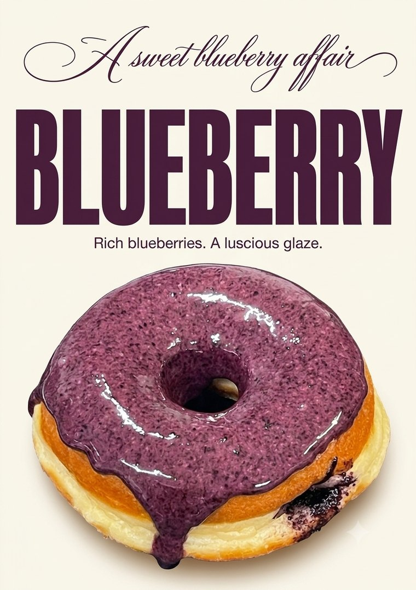
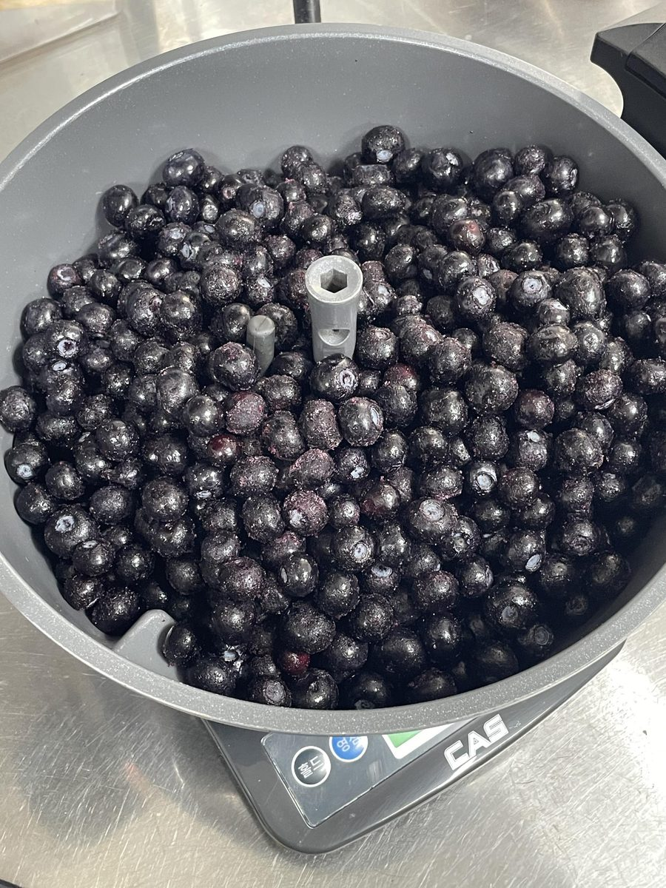
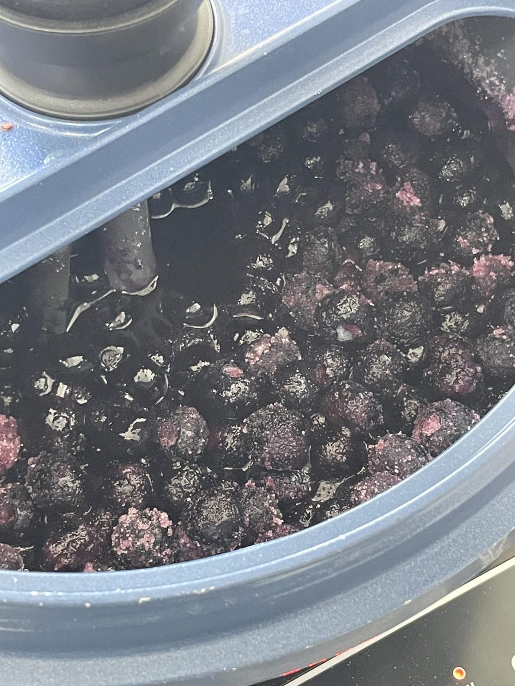
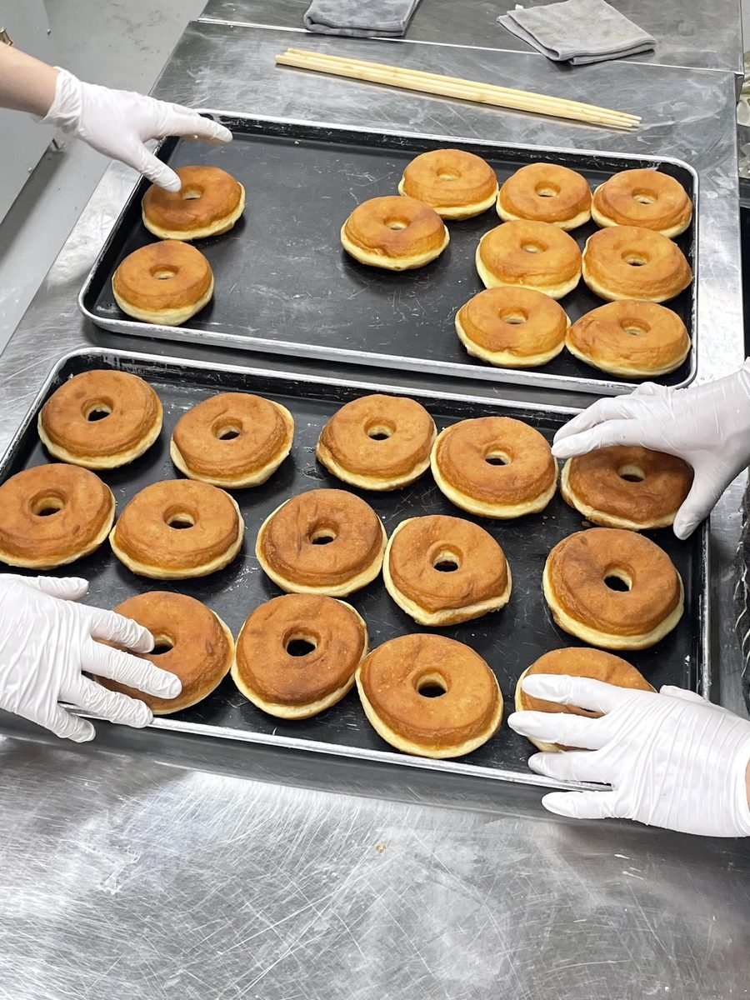
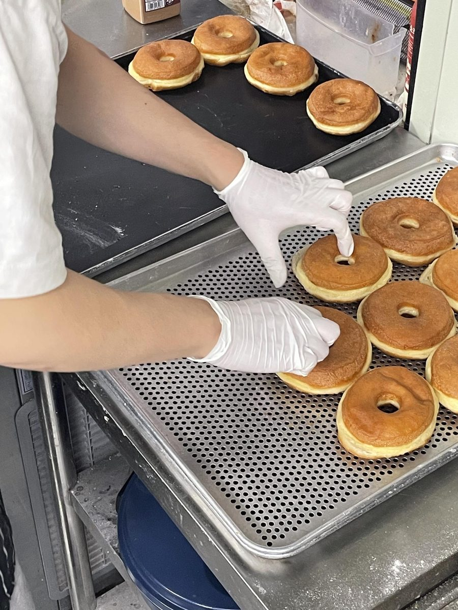
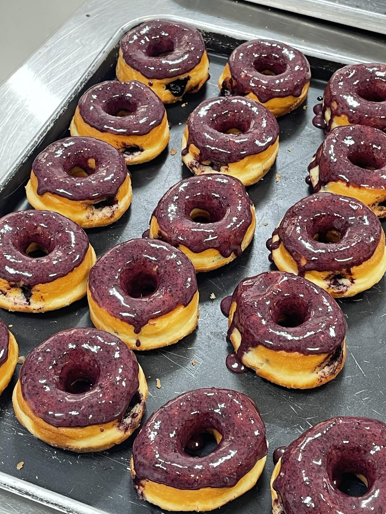
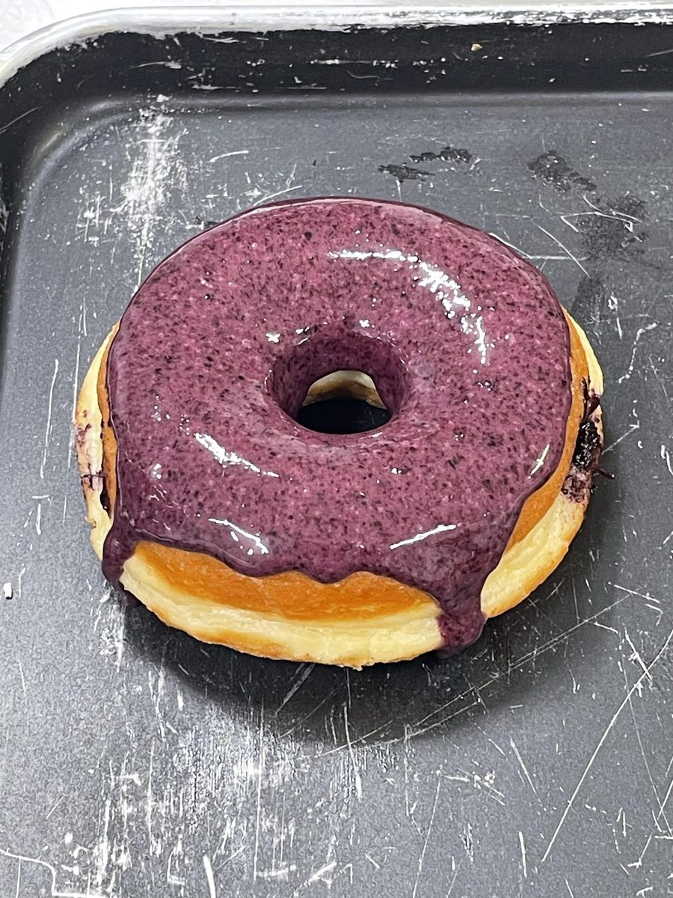

a sweet blueberry affair

One donut, four steps, one morning. Here's how our blueberry donut comes together, from a bowl of berries to a glossy purple glaze.
Tap the numbered dots on each photo to look closer.
it starts with fruit
Our blueberry donut starts long before the fryer, with a bowl of whole blueberries on the scale.

slow and steady
Berries and sugar go into the cooker together and are stirred as they heat, until the fruit breaks down into a thick, deep-purple jam.

our everyday dough
The blueberry donut is built on the same dough as the rest of our lineup, mixed, cut and fried by hand every morning.


16 seconds of our everyday donut making: dough, fryer, glaze. It's not the blueberry batch, but it's the same hands and the same dough.
the finishing touch
Last step: each donut gets its blueberry glaze and is left on the tray to set.

see you in Gwangalli

Blueberry is a seasonal flavor you'll only find at our Gwangalli shop. Like everything we make, it's sold today only, so come early.